遥测¶
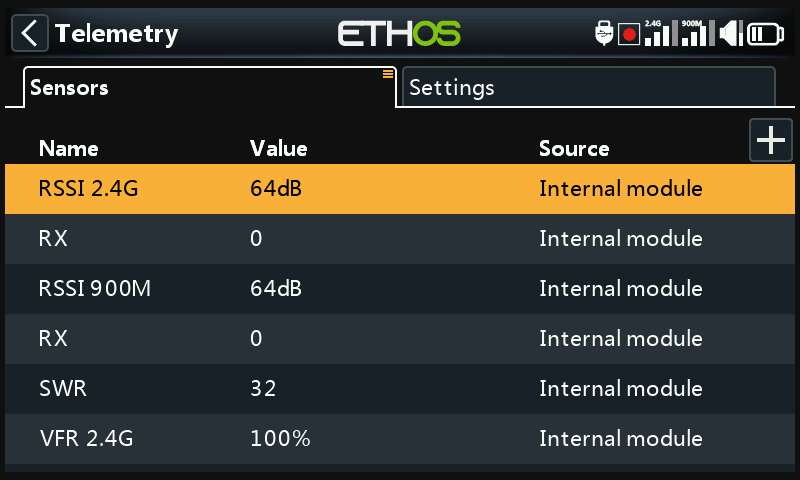
遥测将模型的信息回传给飞手——链路质量（RSSI、VFR）、电压与电流，以及所连接传感器所上报的任何其他数据（GPS 位置、高度等）。每个模型最多支持 100 个传感器；传感器的发现与配置在此页面完成，但遥测数据实际是以显示屏小组件的形式显示的，需在“配置显示屏”中单独配置。
FrSky 遥测的工作原理¶
FrSky 的传感器无需集线器：Smart Port（S.Port） 是一条三线总线（Gnd、V+、Signal），可按任意顺序菊花链连接到 X/S 系列及更新接收机的 S.Port 接口上，以 57,600 bps 半双工方式工作（F.Port 与 FBUS 速率更高）。
- Physical ID（物理 ID）——总线上最多可挂 28 个节点（含接收机），每个节点都需要唯一的 Physical ID（00–1B 十六进制）。FrSky 设备出厂即带有合理的默认值（例如 Vario = 00、FLVSS = 01、Current = 02、GPS = 03）——如果连接了两个相同的设备，第二个的 Physical ID 必须通过设备配置进行修改。
- Application ID（应用 ID）——与 Physical ID 相互独立：一个传感器可以上报多个数值，每个数值都有自己的 Application ID。Vario 只有一个 Physical ID，但有两个 Application ID（高度、垂直速度）；FLVSS 有一个 Physical ID 和一个 Application ID（电压）。若要用两个 FLVSS 传感器监测两组 6S 电池，则第二个传感器的两个 ID 都需要更改——Physical ID 用于独占总线通信，Application ID 则让接收机能区分 Lipo 1 与 Lipo 2（例如
0300→0301）。通常改动的是第 4 位十六进制数字，取值 0–F。
!!! note 仅当传感器冲突检测被禁用时，多个传感器共用同一 Application ID 而 Physical ID 不同才是有效的——这是一种特殊用途的设置，并非默认情形。
每个接收到的数值都作为独立传感器进行跟踪：数值、Physical/Application ID、可编辑的名称、单位、小数位精度、可选的 SD card 记录标志，以及各自的运行最小/最大值。设置完成后，传感器会在每次开机时自动发现，但首次必须手动发现。发现之后，传感器可通过语音播报、送入计算传感器、用于逻辑开关、Vars 或混控，可显示在自定义遥测屏幕上，也可完全不建屏幕而直接在本设置页面读取。
FBUS（原 F.Port2）进一步升级，将 SBUS 控制与 S.Port 遥测合并到一条线上，速率为 460,800 bps（相比 F.Port 的 115,200 与 S.Port 的 57,600——三者的比特率互不兼容），并允许一个主机在这一条线上与多个从属配件通信，且全部可从遥控器无线配置。
多接收机遥测（ACCESS Trio）¶
在射频系统下最多可注册三台接收机，每台已对频的接收机都可通过 RX1/RX2/RX3 单独配置（端口引脚等）。通常每条射频链路只有一条入向遥测通道——Tandem/TD 系统是例外，它在一个模块上以 2.4GHz 和 900MHz 运行两条通道。当前的遥测源可能会根据射频条件在飞行中切换；RX 传感器实时报告当前正在发送遥测的是哪一台接收机（并会记录）。
常见的设置方式：将 S.Port 传感器总线菊花链连接到全部三台接收机，共用同一电源，然后按常规注册/对频每台接收机并发现传感器——遥测源会随当前活动接收机的变化自动切换，外部 S.Port 传感器数据也会透明地随之切换。（接收机内部传感器——RSSI、VFR、RxBatt、ADC2 以及 RX 本身——不以这种方式关联；它们总是报告当前作为遥测源的那台接收机的数据。三台接收机同时上报遥测的功能已在计划中，但尚未提供。）
链路质量传感器¶
- RSSI（接收信号强度指示）——模型的发射信号在接收机处的强度。默认报警值：ACCESS/TD/TW 为 35（低）/ 32（危险），约 28 时失控；ACCST 为 45 / 42，约 38 时失控。当链路完全丢失时会触发“遥测丢失”——此时不会再有任何报警响起，因为遥控器已没有遥测数据可供判断；应将其视为立即返航的提示。（在间距不足约 1m 时，接收机可能被信号淹没，产生虚假的“丢失/恢复”报警循环——这并非真实故障。）RSSI 能较好地近似有效距离，但 VFR 是更可靠的链路质量指标。
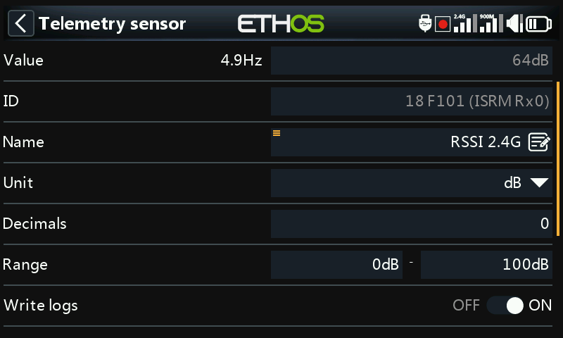
TD 接收机会按频段分别上报 RSSI（2.4G、900M）；TW 接收机同样按频段上报（2.4FSK、2.4LoRa、900M）——启用每频段独立 RSSI 报警可为每个频段获得独立的语音提示，而不是一个合并的提示：

- VFR（有效帧率）——每接收 100 帧中的有效包数；这是 ACCESS 2.1 之后取代“将丢帧率折算进 RSSI”做法的指标。默认低值警告为 50%。
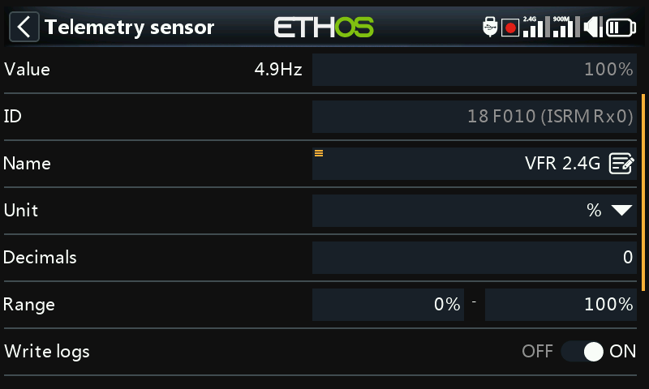
TD/TW 接收机上报两路 VFR（每频段一路）；而 Rx VFR（在 TD/TW/AP/AP Plus 接收机上）则统计所有有效帧，无论其来自哪个频段——如果只想跟踪单一 VFR 数值，就应关注这一项。
- RxBatt——接收机电池电压。
- ADC2——第二路模拟电压输入，适用于支持该功能的接收机。
- SWR——使用外置天线时的天线驻波比。
- 姿态/运动传感器（在支持的情况下）：R.Angle、P.Angle、AccX/Y/Z。
每个数值型传感器还会自动生成 <name>-/<name>+ 最小/最大值传感器，尽管它们不会显示在主传感器列表中。
发现传感器¶
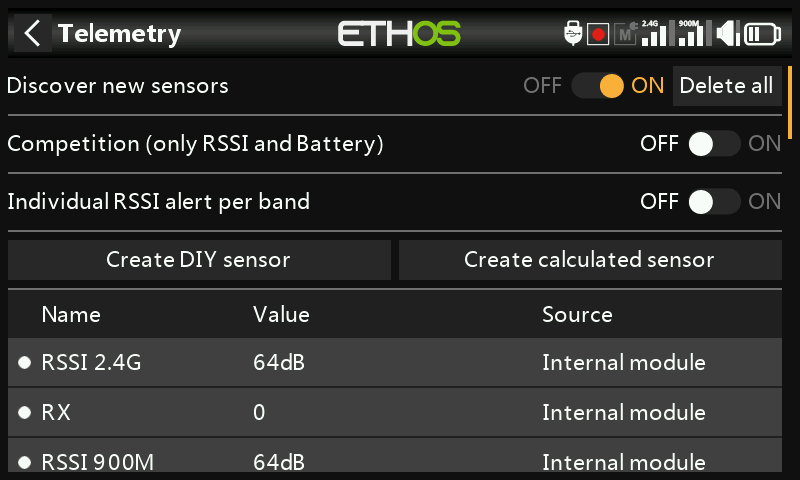
在全部设备已对频并通电的情况下，启用发现新传感器——每发现一个传感器时会有一个闪动的圆点标记（若尚无数据则显示为红色数值），页面会自动填充。此操作需逐个模型执行，并且每次新增传感器后都要重新执行一次。
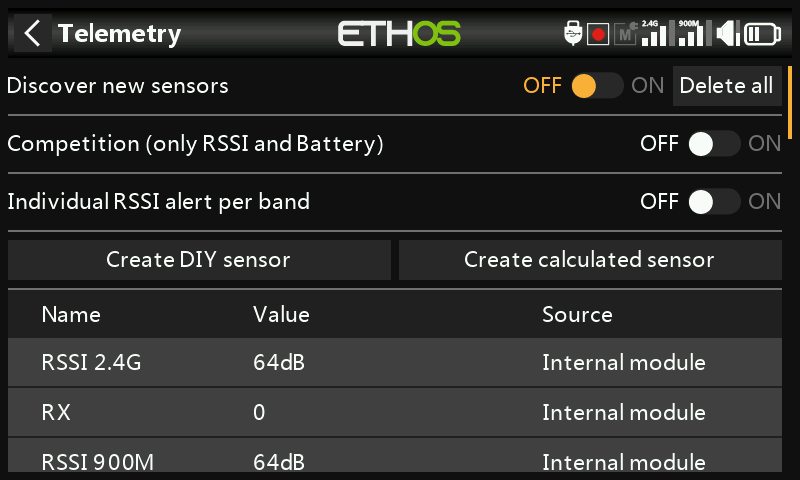
- 完成后请将发现功能切换回关。
- 全部删除会清除所有传感器，以便重新开始。
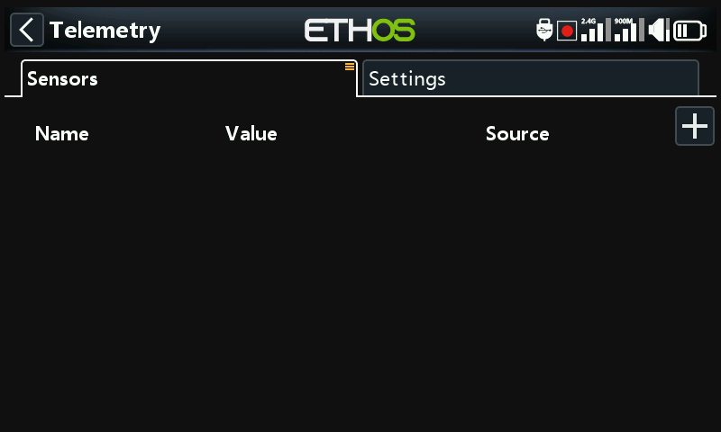
- 竞赛模式将遥测精简为仅 RSSI 和 RxBatt——适用于只允许链路状态传感器的比赛。再次关闭该模式后，需重新上电才能重新发现传感器。
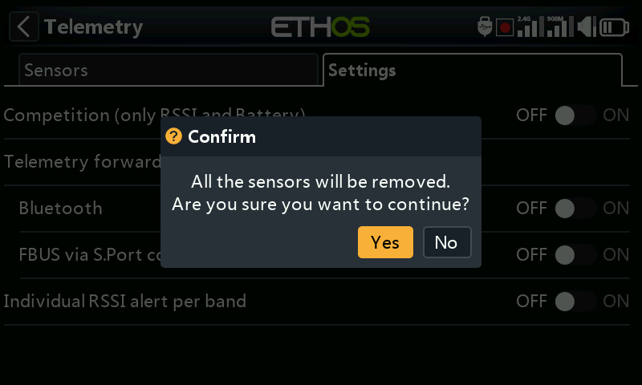
- Bluetooth 遥测模式可与 FrSky FreeLink 手机应用配对，该应用可实时显示遥测数据，也能配置增稳接收机等 FrSky 设备。
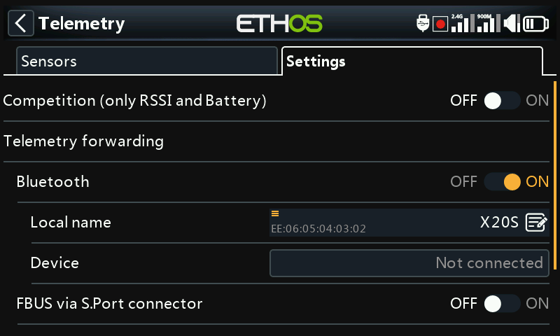
编辑传感器¶
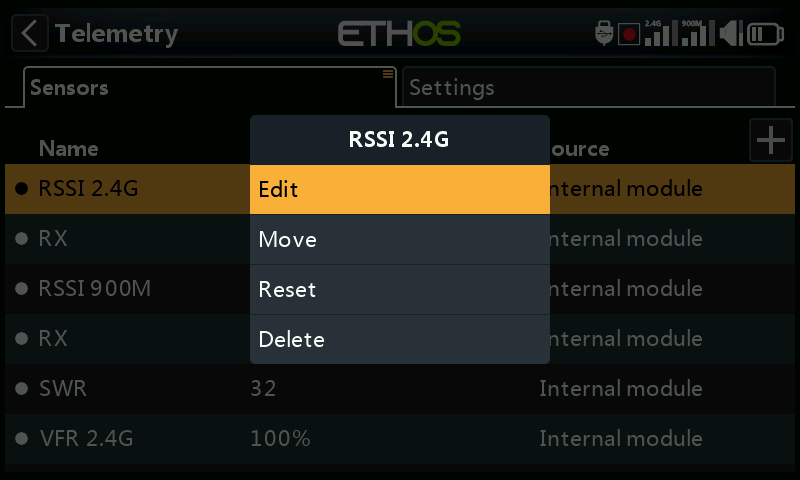
点击某个传感器可选择编辑、移动、复位或删除。通用字段包括：数值（只读）、ID（Physical + Application ID，以及发送该数据的接收机）、名称、单位、小数位、范围（固定的缩放限值——主要在该传感器被用作通道信号源时才有意义）、写入日志、复位（用于复位该传感器的信号源），以及传感器丢失警告延时（可完全禁用，或设为 1–30 秒，默认 10 秒，以过滤短暂掉线——请注意该值设置过高的风险；即使同时有多个传感器掉线，“传感器丢失”提示也只播放一次；对接收机内部传感器默认禁用，因为它们很少丢失）。
某些传感器有各自专有的字段：
- ADC2——比率与偏移，用于校正缩放。

- RSSI——危险值与低值警告阈值。
- VFR——低值警告（默认 50%）。
- VSpeed（升降速度计的垂直速度）——范围最大 ±100m/s（默认 ±10m/s）。升降速度音效本身现在由播放 Vario 特殊功能管理，不在此处设置。
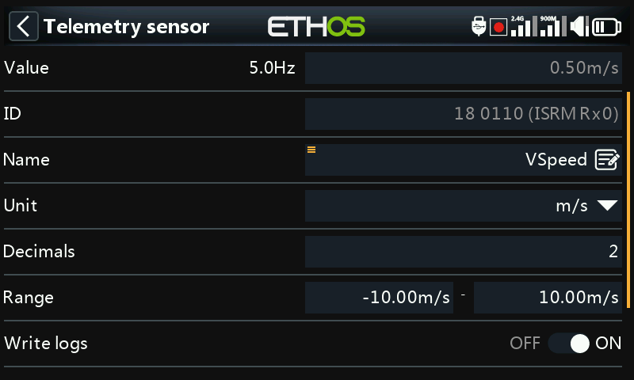
DIY / 第三方传感器¶

创建 DIY 传感器用于手动添加非 FrSky 传感器：可使用自动检测（尽可能自动填充 Physical ID、Application ID 与模块），也可手动设置，此外还有协议小数位/单位（传入数据的精度，0–3 位小数，及其原生单位）和显示小数位/单位（与协议本身的设置独立），以及与其他传感器相同的范围/比率/偏移/写入日志/复位/传感器丢失警告延时等字段。
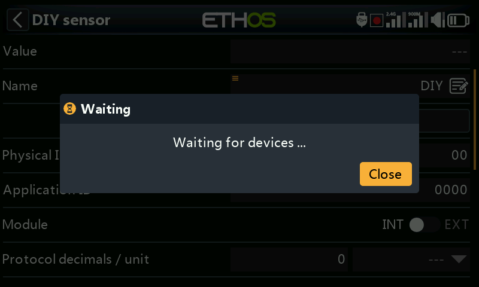
计算传感器¶
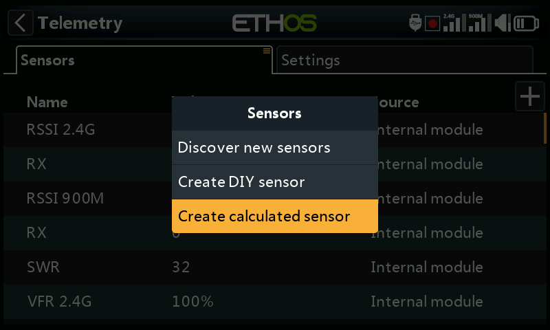
由一个或多个现有传感器派生出新的传感器：
- 消耗量——已消耗的电量，由电流传感器（例如 FAS 系列）积分得出。单位为 mAh/Ah，范围最大 1000Ah。
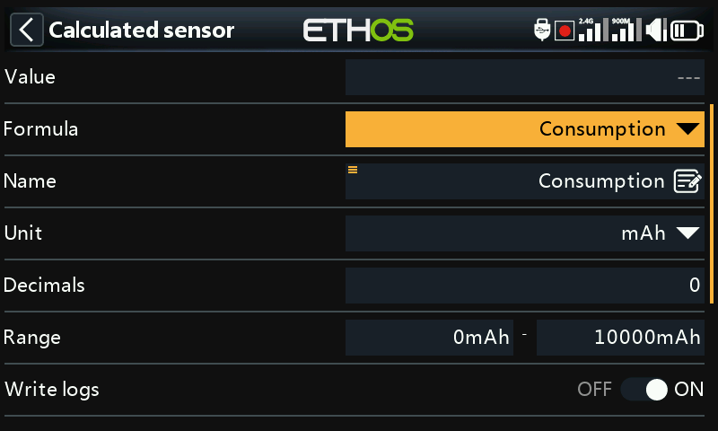
- 距离——由 GPS 信号源计算（若需三维距离，还需一个高度信号源）。单位为 cm/m/km/ft，最大 20km。

- 行程——累计相邻 GPS 定位点之间的距离。单位相同，最大 1000km。
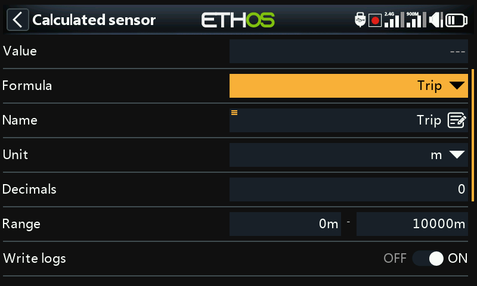
- 多 Lipo——将两个或多个 Lipo 电压传感器级联，以监测大于 6S 的电池组（最高 67.2V/8S）。按由低到高的顺序选择各个电芯传感器；每个额外的 Lipo 传感器都必须先在设备配置中更改其 Physical 和 Application ID（该处的 Lipo 电压设置工具可提供帮助），逐个进行发现，并重新命名以便区分。
- 百分比——将某个传感器重新缩放为 0–100%，并提供反转选项（例如显示剩余百分比而非已消耗百分比）。

- 功率——由一对电流与电压信号源计算瓦数，最大 1,000,000W。
- 自定义——由一个或多个信号源串联而成的任意公式。
每个计算传感器还具备持久保存（在关机/切换模型后仍保留，下次使用时重新载入）选项，以及编辑界面上的复位按钮。
自定义传感器¶
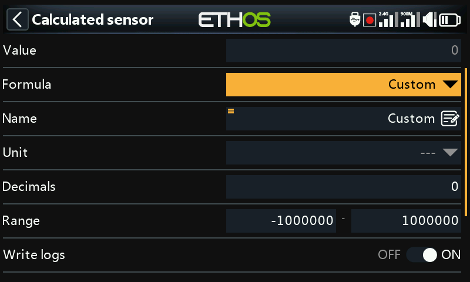
从一个信号源开始，然后通过添加串联后续运算：加(+)、减(-)、乘(×)、除(/)、Min、Max、Sqrt。单位可从涵盖电压、电流、容量、功率、距离、速度、时间、温度、百分比、角度、压力等的长列表中选择；范围为 −1,000,000 至 1,000,000，小数位 0–4 位。
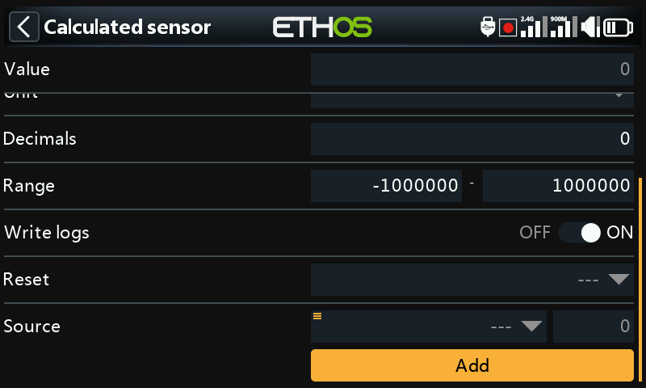
峰值功率
将电压传感器（VFAS）与电流传感器（Current）相乘，然后添加一个 Max 运算，其信号源引用该传感器自身的当前值（MaxPower），即可跟踪出现过的最高读数——本例运行中为 288W：
与常数进行运算
将信号源设为 RSSI 2.4G（读数 64dB），然后添加一个减运算，长按其信号源并应用转换为数值，将其变为可编辑的常数（20）而非实时信号源——结果为稳定的 44dB（64 − 20）：
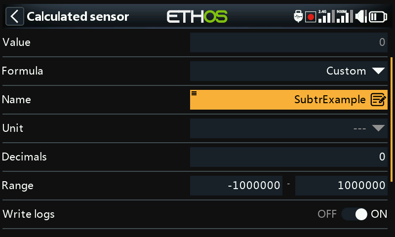
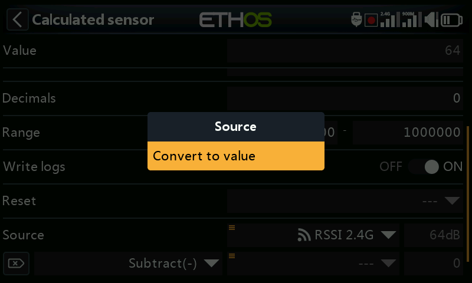
信号源的内部数值
每个信号源都有一个 ±1024 的内部整数范围，对应其 ±100% 的显示范围——将一个自定义传感器指向例如油门即可直接看到：满油门内部读数为 +1024，反向到底为 −1024。
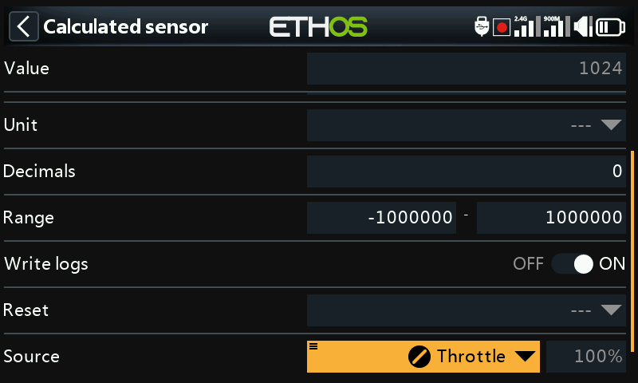